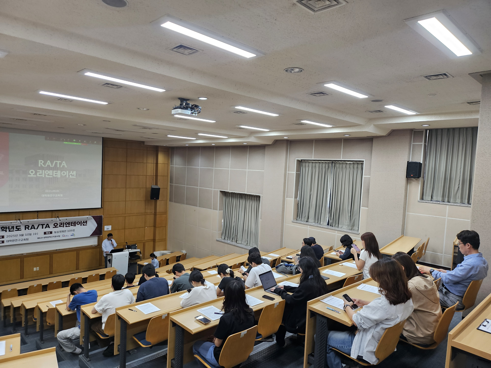
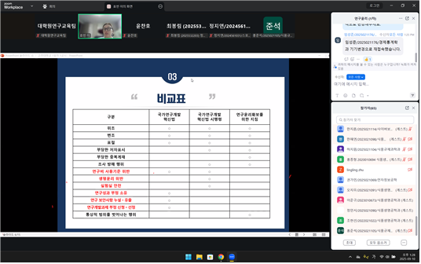

🎊 9월 프로그램 결산
RA/TA 오리엔테이션
9월 10일(수) 농심국제관 106호
교내 RA/TA 행정 사항을 안내 하고, 조교로서의 복무 사항등을 설명하는 자리였습니다. 오프라인과 온라인에서 약 100여명의 학생이 참여해 주셨습니다! 신규 도입 제도인 Progress Report 도 안내드리고 참가하신 분들께는 맛있는 🥪샌드위치를 나누어 드렸습니다. 앞으로도 RA/TA로서 성실한 복무를 부탁드려요!
9월 비교과 프로그램
9월 10일~24일, Online 진행
연구윤리, Scival, 그리고 논문작성법까지! 대학원생들의 연구 역량을 위한 비교과 프로그램이 9월에 다양하게 펼쳐졌습니다. 여러 과목에서 모두 90여명의 학생들께서 참석해주셨습니다. 참석해주신 분들의 연구 역량이 더 좋아졌길 🙏기대할게요 !
융복합연구모임 Kick-Off
9월 22일, 산학협력관 629호 (대학원연구교육팀)
여러 학과가 모여 하나의 융합 과제를 연구하는 융복합 연구모임! 9월 중순까지 모두 4팀이 신청해주셨습니다.
다양한 연구과제로 모인 4팀이 어떤 흥미로운 연구결과를 도출해 낼지 기대됩니다.
팀장님들을 모시고 연구모임 소개와 비용 집행 등에 대한 Kick-Off 오리엔테이션을 진행하였습니다!